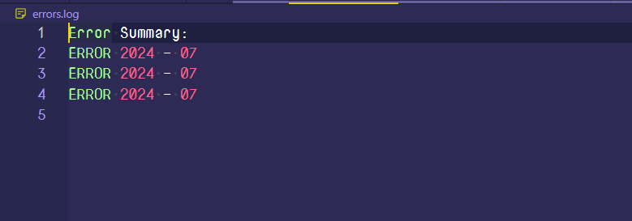
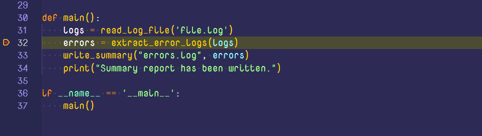
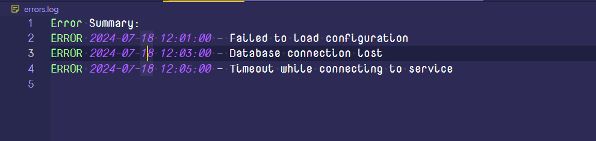

Week 7: Debugging an application inside VSCode
Debugging is one of those things that took me a long time to figure out. It all seemed like overkill as compared to the humble print statment.
Nevertheless, I invested some time into learning how to use a debugger, and while I am no debugging expert, I thought that sharing what I learned would be worthwile. In this article, we shall have an overview about debugging and get our hands dirty by looking at how to debug a simple Python application in VSCode!
Debugging a simple script
Let's write a simple buggy program and then debug it line by line. The program below reads in a log file, extracts all the error logs and then prints those extracted logs to a separate file
def read_log_file(path):
logs = []
try:
with open(path, 'r') as file:
for line in file:
print("line: ", line)
except FileNotFoundError:
print(f"Error: The file {path} was not found.")
return logs
def extract_error_logs(logs):
error_logs = []
for log in logs:
if 'ERROR' in log:
timestamp = log.split('-')[0].strip()
message = log.split('-')[1].strip()
error_logs.append((timestamp, message))
return error_logs
def write_summary(filename, errors):
try:
with open(filename, 'w') as file:
file.write("Error Summary:\n")
for error in errors:
file.write(f"{error[0]} - {error[1]}\n")
except Exception as e:
print(f"An error occurred while writing to the file: {e}")
def main():
logs = read_log_file('file.log')
errors = extract_error_logs(logs)
write_summary("errors.log", errors)
print("Summary report has been written.")
if __name__ == '__main__':
main()
If we run the program now, we get the following content written to the errors.log file.

This is clearly not what we expected. We certainly have a bug in our program, and it's time to fish it out.
When you read through the code, it seems that the extract_error_logs() function is the culprit, so we shall set a breakpoint on the line it's called, as the starting point of our analysis.

Start your debugger by going to the sidebar and select the debug icon or press (Ctrl + Shift + D) and select Run and Debug
We are interested in the state of the timestamp, message and error_logs variables throughout the program execution, so we shall add them to the watch list.
Step through the extract_error_logs program as it runs and observe the program as it executes. The complete process is shown in the video below:
From the video it is very apparent that the way we parse error logs is flawed. With that new information, we can start working towards a solution. This is the corrected version of our function:
def extract_errors(logs):
errors = []
for log in logs:
if "ERROR" in log:
parts = log.split(' - ', 1) # Split on ' - ' only once
if len(parts) == 2: # Ensure the split was successful
timestamp, message = parts
errors.append((timestamp.strip(), message.strip()))
else:
print(f"Malformed log entry: {log}")
return errors
Now our program should be able to run as expected. Here is a sample of our resultant file now

Stepping through your code
One of the concepts that took me long to understand was the distinction between the debugging functions of continue, step over, step into and step out. So I will try to explain them here in a way that I understand them!
- continue - This is the simplest to understand and it means to proceed until the next breakpoint. Very basic, isn't it?
- Step over - Evaluate the current line and move on to the next. If the current line is a function, then execute it and move onto the next line
- Step into - If the current breakpoint is set at a function, then move into that function/gain a focus on that function.
- Step out - Execute the remainder of the function and proceed to the caller
Advanced debugging methods
With the basic stuff of the way, I don't think it would hurt if we took a peek at some of the advanced debugging capabilities of VSCode. I won't go into detail, but I think it would be nice to have an idea of what can be!
- Function breakpoints - these will be set automatically when a certain function is called.
- Conditional breakpoints - These are only triggered when a variable is set to a certain value or value range/only when certain conditions are met
- Log points - This is for the
printstatement warriors. It allows you to set a string that will be printed out when this point of execution in your program is reached! - Remote debugging - This allows you to debug a program that is running on a remote machine, using a protocol like SSH or any other!
- Data breakpoints - These are triggered only when the value of the specified variable changes!
- Attaching the debugger to a process - Besides debugging the current python script, VSCode's python debugger allows you to hook into a different python process that is running on your host machine!
Wrapping it all up
The ability to debug well, especially using a debugger is a key tool in the engineer's box. It will not only save you development time, but also make for a better coding experience. At some point, you will realise you can only go so far with the rudimentary print() statements.
Important links for further reading
I cannot exhaust all the interesing things you can do with debugging in a single blog post, but only make you aware of what is possible. Here are some links that should provide more comprehensive literature about the whole "code-sniffing" process.